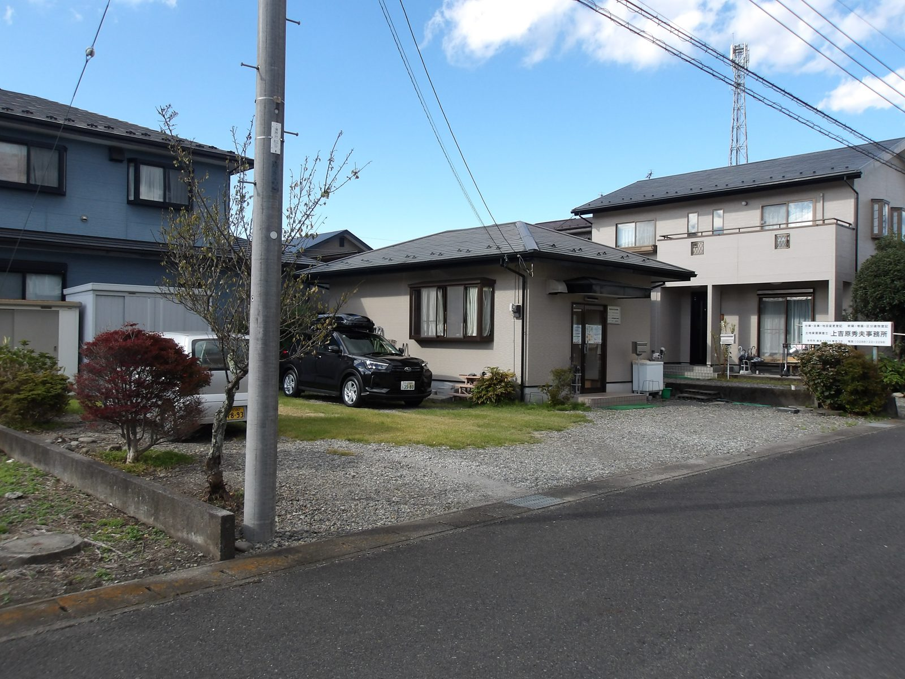
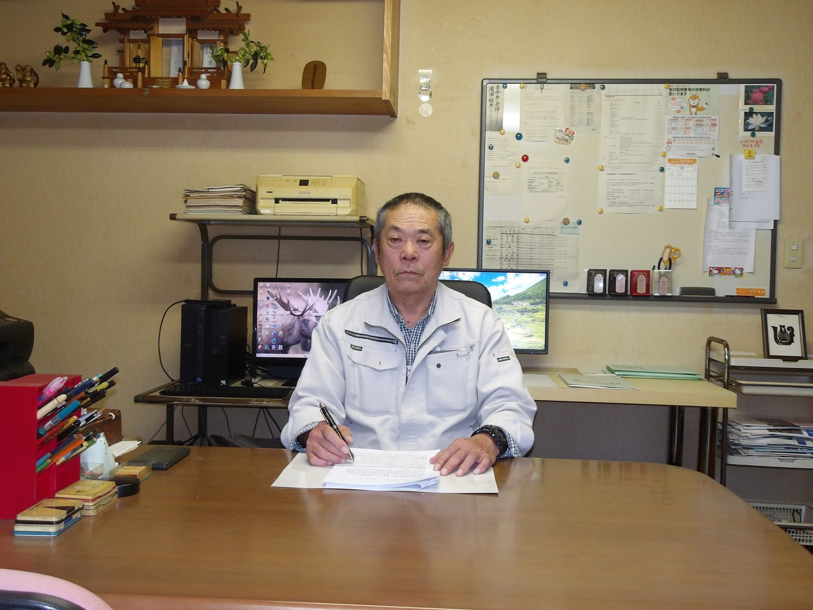

ようこそへ
代表 土地家屋調査士・測量士 上吉原 秀夫
〒321-2335 栃木県日光市森友1559番地26
土地・建物の所有者から依頼を受け、資料・現地調査をして境界等の確認を行い、測量をし、各種図面を作成して登記申請手続きをいたします。土地・建物のことで分からない事がありましたら、お気軽にご相談ください。
※事前にご連絡いただければ、土・日・祝日も対応します
事務所の様子
日光市森友の事務所です。東武 下今市駅から車で約10分。ゆとりのある駐車場がございます。


業務内容
境界確定・境界標の設置
境界標が亡失した時や隣接地との境界が不明な時、隣接者の立会いを求め、調査・測量をし、境界標を設置します。
土地の分筆・合筆登記
売買・相続・贈与のために一筆の土地を数筆に分ける分筆登記、複数の地番を1つにまとめる合筆登記。
地目変更・地積更正登記
山林や畑を宅地にしたなど土地の用途を変更した時の地目変更、登記簿の面積と実際の面積が違う時の地積更正。
建物の表題・変更・滅失登記
新築や、相続により未登記であることが分かった時の表題登記、増築等で床面積が変わった時の変更登記、取り毀し・焼失時の滅失登記。
土地表題登記・地図訂正の申出
青地・道路・水路などの払い下げで新しく登記簿を作る時の土地表題登記。公図に分筆線が記入されていない時の、地図訂正の申出。
建物滅失申出
既に取り毀された建物の登記が放置されたままで、所有者が不明な場合などに、利害関係人から法務局へ、建物滅失申出を行う事ができます。
よくあるご質問
○○坪の土地を測るのに、費用はいくらかかりますか？
土地の形状は様々ですので、面積だけでは算出できません。
隣接する道路・水路・青地の有無、隣接民有地の筆数と所有者数、境界点の数、既存境界標の有無、見通しが良い土地か否か、平坦地または傾斜地か、隣接地所有者に相続が発生している場合などによって費用は増減しますので、事前に公図等の法務局資料や現地の確認が必要になります。
建物を取り壊したのに、所有者が分からず滅失登記ができません。
建物滅失申出という方法があります。
利害関係人（代理人）から、法務局へ関係書類を添えて申し出ます。
法務局は、建物所有者に、建物滅失登記を申請するよう、登記上の住所宛に郵送で通知します。しかし、建物所有者は不明の為、通知は法務局に戻ってきます。
そのため法務局は、職権で、現地調査を行い、建物滅失登記手続きをします。
上記の手順を踏む為、建物滅失登記申請よりも日数が掛かります。
現地に残っている2つの境界点から、なくなった1点を復元できますか？
2点から1点を復元する方法は、既存の2点にズレがあってもわからないため危険です。準拠点（既存の境界点等）が3点または4点以上あれば最小二乗法という手法を利用し、復元することは可能です。
境界標設置の費用や時間はどのくらいかかりますか？
境界標設置は、一連の作業の一部という事になりますので、境界標設置のみの業務は、ありません。
この場合、必要とされる各種の公証資料を収集し、分析する資料調査と、測量着手前に現地において概況を把握する事前調査や、境界確認をするための復元測量を行い、隣接土地所有者と現地において境界確認の立ち会いを行って、合意を得るなどの業務が多々必要となってきます。
因みに、境界標の種類には、刻みマーキング・鋲・金属標・プラスチック杭・コンクリート杭があり、当事務所の境界標設置基本額は1点当たり、境界標の種類により、4,310円～17,250円で、難易度により、加算又は減算されます。（令和8年10月1日現在の基本額）
時間については、目的（土地を分けるための分筆登記申請、境界標が亡失している場合等）や土地の規模にもよりますが、おおむね2ヶ月～3ヶ月程度で完了する業務が多いです。
会社概要
| 事務所名 | 上吉原土地家屋調査士事務所 |
|---|---|
| 代表者 | 土地家屋調査士・測量士 上吉原 秀夫 |
| 所在地 | 〒321-2335 栃木県日光市森友1559番地26 |
| TEL / FAX | TEL 0288-22-2298 ／ 携帯 090-2651-6939 FAX 0288-22-2324 |
| hideokam@fine.ocn.ne.jp | |
| 営業時間 | 午前8:00～午後5:00 土・日・祝日は休み（事前にご連絡いただければ対応します） |
| 設立 | 昭和63年（1988年）4月1日 上吉原土地家屋調査士事務所 設立／同日 上吉原測量調査事務所 設立（測量業者登録）／平成6年（1994年）9月9日 上吉原測量調査有限会社に変更 |
| 所属会 | 栃木県土地家屋調査士会／公益社団法人栃木県公共嘱託登記土地家屋調査士協会 |
| 交通案内 | 東武 下今市駅から車で約10分（ゆとりのある駐車場がございます） |
お問い合わせ・ご相談
土地・建物のことで分からない事がありましたら、お気軽にご相談ください。
携帯 090-2651-6939 ／ FAX 0288-22-2324
営業時間 午前8:00～午後5:00（土・日・祝日は休み・事前のご連絡で対応可）